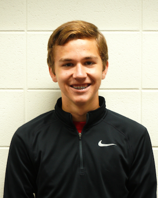

Student Body PresidentOswaldo Ambrosio (Senior)Oswaldo Ambrosio a representative of the junior class. You can also see in Choir, Band, Debate, Large Group Speech, Individual Speech, Theater, Diversity Alliance, Feminist Club, the co-ed dance team, Ambassadors, National Honors Society, and the Grinnell High School's Drama Club. Outside of the high school, he also volunteers regularly for the Iowa Democrats. |
|

|
Student Body Vice PresidentEmma Harrington (Senior)Emma Harrington is a senior at GHS and is the vice president. Aside from Student Council, she is also involved in theatre, cross country, studio dance, band, choir, and Ambassadors. Her outside hobbies include music and poetry. |

|
Student Body SecretaryDanica Nolton (Senior)Danica Nolton is honored to be a part of student council as a junior class representative. She is very lucky to be involved in many school and extra-curricular activities. She enjoys being part of creating change at Grinnell High School. |
Student School Board LiaisonMairead Brownell (Senior)As school board liaison, Mairead enjoys being included in all of the school board's endeavors. In addition to being involved in student council, she is also in cross country, band, choir, theatre, and soccer. |

|
Senior Class PresidentIsaac Cole(No bio available) |

|
Senior Class RepresentativeCecilia Bagnoli(No bio available) |

|
Senior Class RepresentativeCici Dugas(No bio available) |
Senior Class RepresentativeSienna DurrSienna Durr is a proud member of the basketball, soccer, and track teams, Ambassadors, TATU, Student Athlete Leadership Team, and student council. This is her first time serving on student council and she looks forward to representing her senior class this year. |
|
Senior Class RepresentativeSummer ThomasSummer has been in Student Council as a class representative for four years now. She has been apart of the bicycle rack committee, the invisible closet committee, the blood drive committee, the mental health committee, and every dance committee. |

|
Junior Class PresidentHope NelsonHope is involved in many activities around the community including: Volleyball, Drama, Speech, Tennis, and many other things. You can always come to her with any concerns or problems that you would like her to address. |

|
Junior Class RepresentativeJulia ChamberlandJulia Chamberland represents the junior class. She is involved in music, theatre, sports, and more at GHS. Julia wants to make our school a better place and loves hearing ideas that everyone has to offer! |
|  |
Junior Class RepresentativeMatthew CunninghamMatthew Cunningham is serving his first year on Student Council as a junior class representative. Other than Student Council, he is involved in Cross Country, Basketball, Track, Golf, Ambassadors, and Big Brothers Big Sisters. |

|
Junior Class RepresentativeEli Ivanov(No bio available) |

|
Junior Class RepresentativeLane ThompsonLane is a representative of the junior class and part of the Green and Mental Health committees. He enjoys being apart of these committees because he is able to make a positive change at Grinnell High School! |

|
Sophomore Class PresidentYonatan AmbrosioYonatan is actively involved in sports, including X-Country and Soccer, Fine Arts, and Theater. He is the current freshmen class president for the class of 2020. |

|
Sophomore Class RepresentativeBella Amador-LacsonBella is involved in band, varsity choir, golf, debate, and Model United Nations. If you see her wearing headphones, it's because she wants to escape reality into her mind where anything she imagines can become her reality. |

|
Sophomore Class RepresentativeMary BlanchardMary is in cross country, basketball, and soccer, as well as band and choir. Outside of school, she referees soccer, and she enjoys reading, petting dogs, and hanging out with her friends. |

|
Sophomore Class RepresentativeHans LarsonHans is a representative of the sophomore class. He is also a part of the golf team, and band. He says if you want anything brought up to student council just talk to him. |

|
Sophomore Class RepresentativeBethany WilligBethany is involved with diversity alliance, band, feminist club, and other activities. Within the student council she is in the Hurricane Harvey committee, homecoming committee, childhood cancer committee, and the Guns & Hoses committee. If you have any concerns or ideas you can approach her. |

|
Freshman Class PresidentBarret EdwardsBarrett Edwards is the president of the freshman class. He is involved in Band, Choir, Debate, Diversity Alliance, Curtain Club, and Feminism Club. |

|
Freshman Class RepresentativeTanner AlgerTanner Alger is a member of band, choir and swimming. He hopes to do more in the coming years and help GHS progress in anyway that he can. |

|
Freshman Class RepresentativeKyle DillonKyle Dillon is pretty athletic. He plays football, soccer, basketball, and runs track. He is also involved in a lot of religion based organizations like FCA. |

|
Freshman Class RepresentativeCole McGriffCole is a nice person, and he likes people. He is also a student athlete. |
Freshman Class RepresentativePayal PatelPayal is a representative for the freshman class. This is her first year in student council. She is involved in Cross Country, Basketball, Soccer, and Band. |